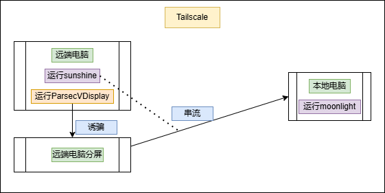
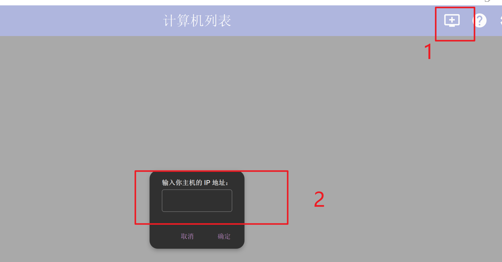
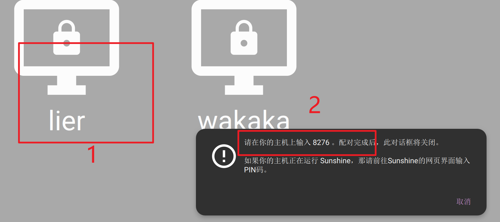

一种免费、高清、安全、但是很麻烦的远程桌面连接方案
一种免费、高清、安全、但是有点麻烦的电脑远程连接方案
该方案能够解决的问题
1、远程连接不受距离限制，通过tailscale实现，但是一定要保证网络的稳定
2、免费高清串流，通过sunshine和moonlight实现
3、安全，本方案中安全指的是远端的电脑屏幕在串流期间能够保持黑屏，能有效保护隐私，通过ParsecVDisplay诱骗电脑分屏实现
1、基本原理
通过上面的几个工具，大概能够推测出实现的原理 串流指的是将远程计算机的桌面环境、应用程序界面、音频和鼠标键盘输入等实时传输到另一台计算机或设备的过程。 在本方案中，通过ParsecVDisplay诱骗远端的分屏，然后将分屏串流到本地电脑，串流通过sunshine和moonlight实现。 在电脑上设置只在分屏显示，就可以实现主屏幕全程黑屏，保护隐私。然后通过tailscale将两个设备拉到同一个虚拟局域网中，实现不受距离限制的远程连接。
基本原理如下图所示（画的比较糙了）

相较于已有的方法，这个设置起来比较麻烦，但是免费、高清和安全还是非常诱人的。
同时，这个方案有一个非常之名的缺点，这是由于分屏工具的一个BUG引起的。需要按照严格步骤才能防止意外地发生。
2、工具安装
这个工具的安装没有什么特别的，按照步骤进行安装即可，，可以点击下面的链接找到工具下载地址，如果是在Windows的环境中运行，可以按照图中的版本进行下载，实测有效。


注意： 1、sunshine要安装在远端的电脑上
2、moonlight要安装在本地的电脑上
3、ParsecVDisplay要安装在远端的电脑上
4、tailscale在两个电脑上都要安装，注册完成后，登陆同一个账号即可
3、实施步骤
在工具安装完成后，我们能够实现基本的串流，然后就是我们方案的实施
3.1、通过moonlight远程连接电脑
打开moonlight，在右上角点击添加计算机，然后在框中输入远端主机的IP地址即可。 
关于ip地址的获取：Win+R，输入cmd，回车，输入ipconfig，回车，找到IPv4地址即可。 
同时为了能够更好的实现远程的连接推荐使用tailscale安装完成后分配的地址吗，这样可以实现更稳定的远程连接，电脑的ip地址离开局域网之后就不能用了。会自动更换其他地址，这会导致远程连接的失败。
点击计算机列表中需要远程的电脑，第一次需要输入一个验证码，看到验证码后，在远程主机点击sunshine弹出的框，在框中输入就行。  
输入完成后，就能实现最基本的电脑远程了。
设置分屏
保持远程连接的状态下，打开ParsecVDisplay，右下角添加分屏，不过要记住分屏的名称 
需要注意的是，分屏名称会发生变化，这也是 必要按照这个步骤执行的原因
设置sunshine串流的屏幕为分屏
打开sunshine
在配置中选择Audio/Video，将输出名称改成之前设置分屏的名称，然后重启sunshine


这个时候会断连一次
重新moonlight远程连接电脑
等待远程电脑的感叹号消失，连接回复正常，连接远程电脑 
设置只在屏2显示
在设置里设置屏幕只在屏2显示，然后就可以实现远程电脑全程黑屏了。 
结束连接
先在设置中将原本的只在屏2显示改成复制这些屏幕，然后关闭ParsecVDisplay，然后将远端的电脑锁定，保证下次能正常连接。 
之后用ctrl+alt+shift+Q退出moonlight就可以了
只有按照上部步骤才能实现稳定连接，不然分屏工具会随机改变分屏名称，这是导致出现意外地原因，可以使用其他分屏工具进行实验 还有关于tailscale的配置和安装，可以参照相关教程
总结
这件事的灵感来源于跟师兄的聊天，由于初次接触远程连接，感觉很有趣，然后产生了能不能保护隐私的想法，从网上没找到合适方案。由此问师兄，师兄说不能实现吗，串流本质就是投屏，屏幕亮着才能实现吗，然后我就想起了可以借助分屏工具实现，最后测试一番才成功。 个人感觉很有趣，但是限制比较多，也很容易失败，但是也很实用不是吗。